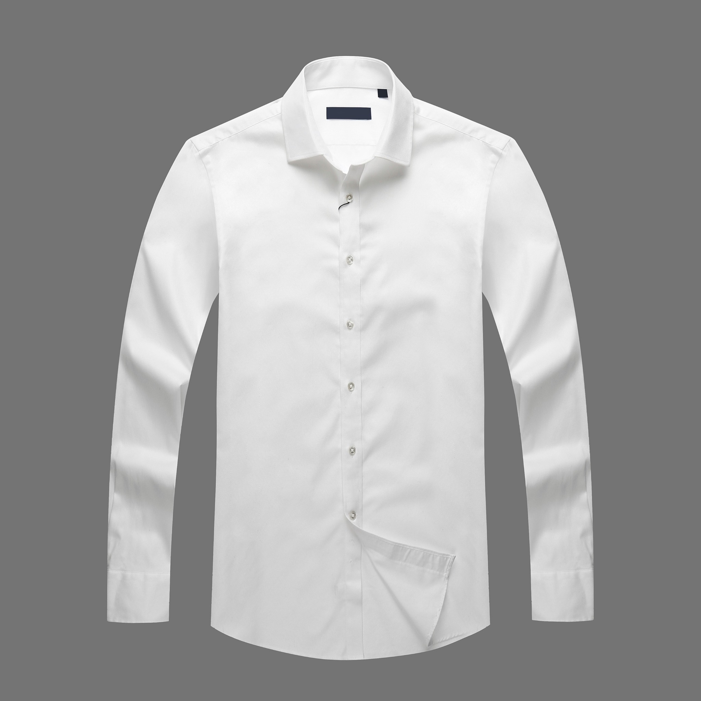
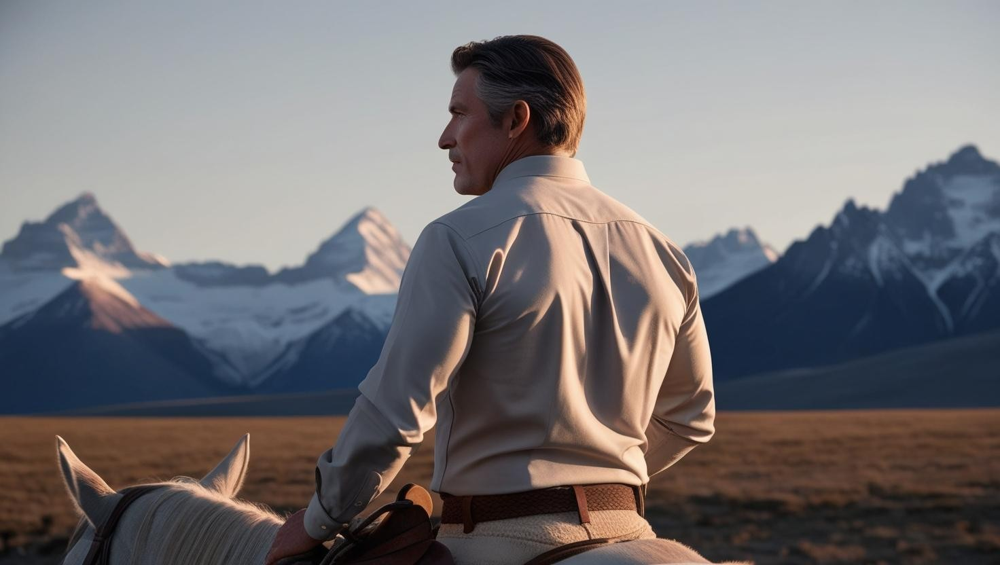

Colección
Camisas hechas con telas nobles, detalles únicos y cortes diseñados para destacar. Cada pieza está pensada para quienes no siguen modas: crean estilo.



Arrieros es más que una marca de camisas: es una declaración de elegancia, fuerza y libertad masculina. Nacida en los Andes, diseñada para hombres que desafían lo común.
Queremos vestir a hombres decididos, que no buscan llamar la atención, sino marcar presencia con elegancia sobria y atemporal.
Camisas hechas con telas nobles, detalles únicos y cortes diseñados para destacar. Cada pieza está pensada para quienes no siguen modas: crean estilo.